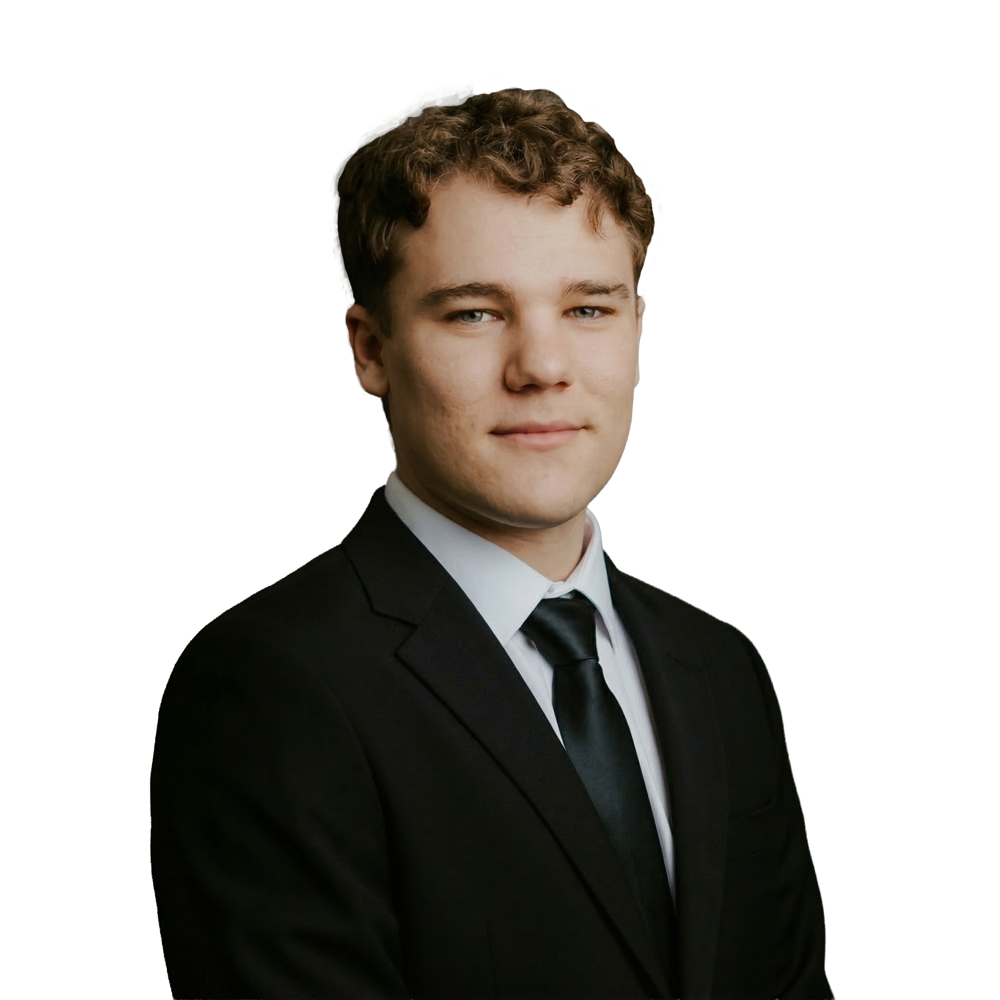

Builder. Tinkerer. Maker.
Westley
Smith.
Built from
the ground up.
I have never believed in the box people try to put you in. I build things — data pipelines, drones, workshops, whatever the problem needs. That approach has yet to fail me.
Get in Touch →
01 — About
Not a job title.
A way of operating.
My wife Rachelle and I live in Modesto, California, where I was born and raised. We are both Central Valley people. Rooted here, building here, figuring it out together.
Ever since I was a kid, I have always wanted to be an inventor. Back then, that meant designing crazy contraptions and rambling to my parents about them until they stopped listening. By my teens, I was tearing apart anything with a circuit board, building computers, and learning to code with Arduinos and Raspberry Pis.
That same energy carried into everything. Airsoft and paintball taught me gearboxes, pneumatics, and precision tuning. My drone hobby turned into crashing drones, which turned into fixing drones, which turned into buying broken ones and fixing them for other people. Eventually I found FPV drone racing and that is what I am currently learning and creating.
Right now, I work in Data and BI, building systems from the ground up. But the throughline has never been the job title. It is the mindset. See a problem, figure it out, build the solution. That approach has yet to fail me.

02 — Projects
Things I've Built.
Dashboard screenshot
App screenshot
Drone build photo
03 — Hobbies
Beyond the Screen.
FPV & Drone Building
Frame up. Solder the stack. Flash the firmware. Tune the PIDs. Crash. Rebuild. Fly cleaner. The loop never gets old.
Airsoft & Paintball
Half the draw is the field. The other half is the workbench — tuning internals, swapping hop-ups, dialing in loadouts. The technical side is as compelling as the game.
Electronics & Tinkering
Circuits, solder fumes, and the satisfaction of a first power-on that does not smoke. What started as curiosity became a way of thinking about everything.
Outdoors
Fishing, exploring, camping — any excuse to get outside and away from a screen for a while.
Rec Sports
I play to compete and unwind, not to go pro. Whatever is in season and whoever is asking.
Family
My wife Rachelle, my parents, my sisters, my grandparents — they are the reason any of this matters. Everything I build is for them.
Airsoft / field photo
Outdoors photo
04 — Experience
Where I've Worked.
Work History
Data Analyst / Report Developer
Jul 2025 – Present
First Tactical · Ceres, CA
Selected to co-lead a company-wide data modernization initiative within six months. Solo-architected a full Data Lakehouse (Medallion framework) in Microsoft Fabric, replacing legacy ODBC-to-Excel workflows. Co-designed and built 41+ production Power BI reports, packaged as a unified app now used daily by sales leadership. Managed platform administration across Shipwise, Elastic, and Shopify with governance over 10,000+ SKUs.
Data Analyst Intern
Feb – May 2025
Stanislaus County Behavioral Health · Modesto, CA
Wrote and optimized SQL queries in SSMS and designed Power BI dashboards that gave leadership direct visibility into client demographics and program performance for the first time.
Business Systems Analyst Intern
Jun – Oct 2024
E&J Gallo Winery · Modesto, CA
Developed and deployed a ServiceNow ticketing workflow through acceptance, QA, and production environments. Presented findings to IT leadership. Documented a legacy Finance Access database, mapping dependencies and creating a matrix diagram for developer handoff.
IT Analyst Intern
Feb 2022 – Apr 2023
G3 Enterprises · Ceres, CA
Managed IT asset inventory for 300+ employees, delivering $118,548 in annual cost savings. Led company-wide migration from legacy phone software to Microsoft Teams Phone.
Manufacturing Operations Intern
Sep – Dec 2021
E&J Gallo Winery · Modesto, CA
Rotational program across 12+ departments — supply chain, quality assurance, bottling, warehouse logistics.
Education
B.S. Business Administration
Aug 2023 – May 2025
California State University, Stanislaus
Concentration in Computer Information Systems.
Technical Stack
Hands-On Skills
Volunteering
Service & Support Volunteer
2023 & 2025
Alaskan Christian College · Soldotna, AK
Volunteered in rural Alaska serving students from remote villages overcoming addiction, abuse, and trauma, contributing to campus construction and building meaningful relationships along the way.